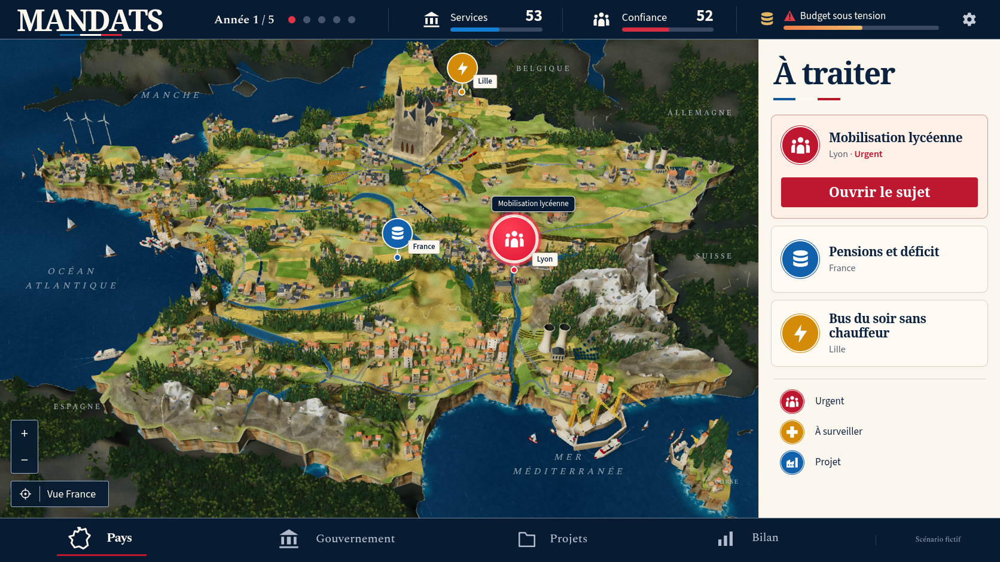
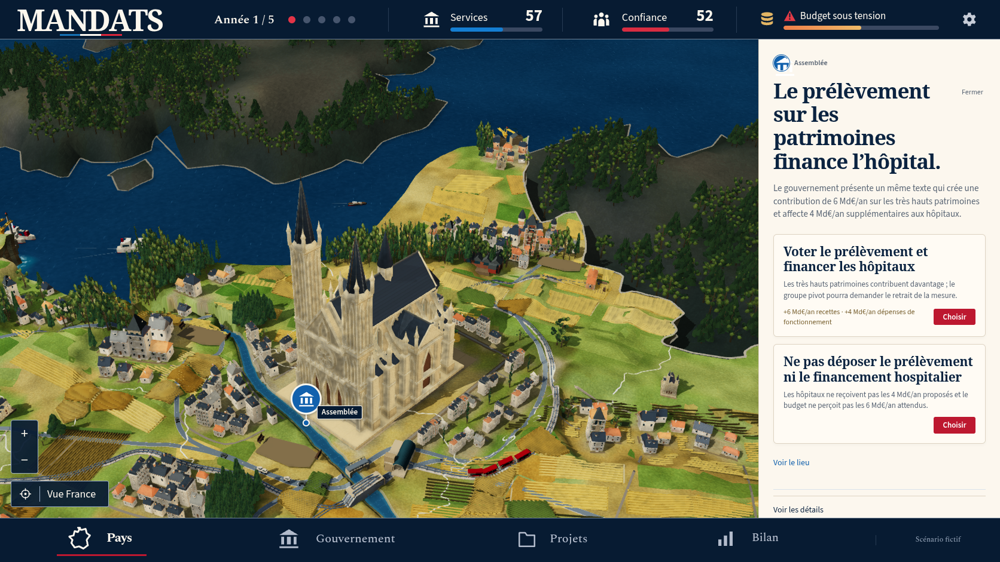
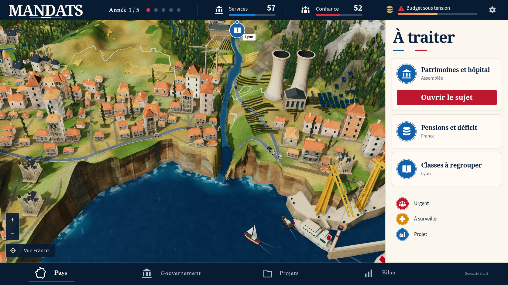
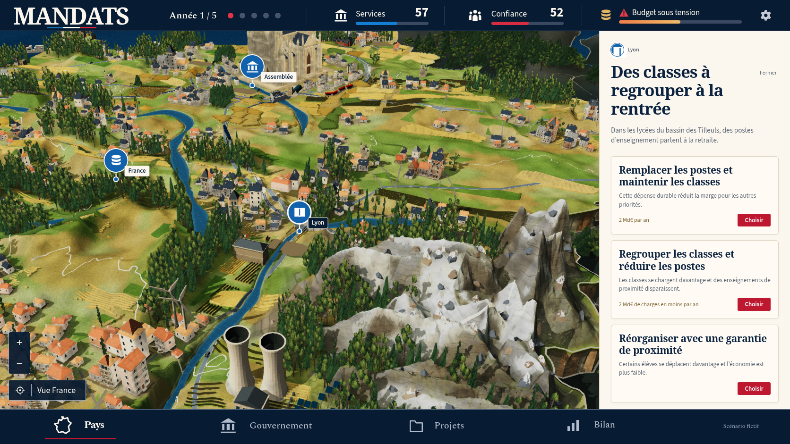
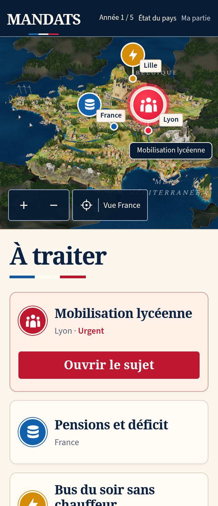
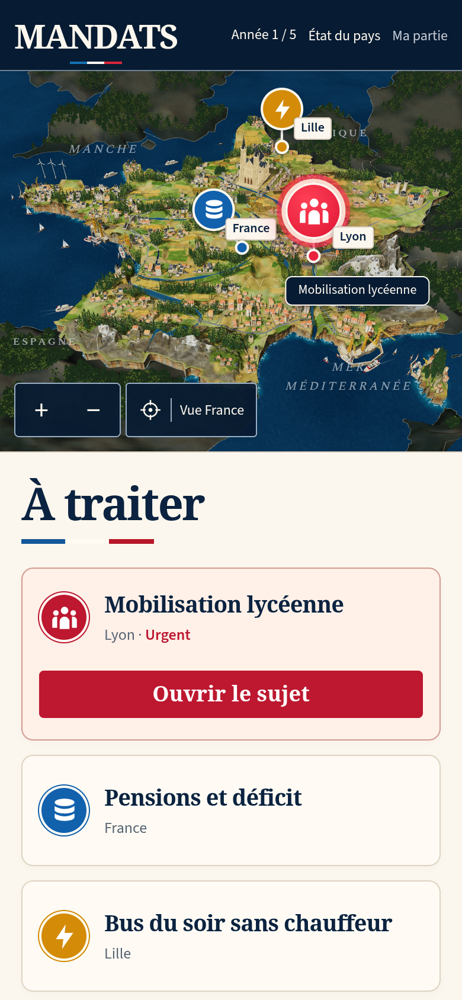

MANDATS — comparaison 44
La miniature reste en dessous de la référence. La reconstruction et les contrôles complets continuent. La PR reste en brouillon.
La capture de jeu montre une véritable décision scolaire : année 1, services 53, confiance 52 et mobilisation lycéenne. Le scénario fictif de la référence n’a pas été injecté dans la partie.


Référence canonique.Production 44, obtenue avec les contrôles du jeu.
| Partie | Modification réelle | Écart encore visible |
|---|
| Relief et matières | Replis intermédiaires sur les faces alpines, épaules enneigées plus larges, cent éclats rocheux supplémentaires ancrés dans les faces rendues. Deux textures minérales recuites et reproduites. | Grandes surfaces alpines encore plates et falaises répétitives. |
| Rivages | Sept ports et 34 bateaux conservés ; aucun recouvrement entre les ouvrages et bateaux de ports différents sur les polygones inspectés. | Embouchure méditerranéenne encore trop encaissée. Les volumes de côte demandent une reprise. |
| Bourgs et bois | Bouquets feuillus associant un cœur opaque et six surfaces pliées, avec des contours de feuilles découpés par un atlas local. 778 maisons acceptées. | Façades simples. La rosace et les fenêtres des tours demandent une correction des ouvertures réelles. Six recouvrements possibles de canopées avec les grands monuments sont relevés. |

Assemblée puis « Voir le lieu ». Les façades de la cathédrale et des maisons demandent encore du travail.
Déplacement natif et zoom vers le rivage sud. Le contact entre le fleuve, la falaise et la mer reste à corriger.
Inspection de Lyon puis un clic sur « Réduire la carte ». La géométrie rocheuse et l’enneigement restent moins fins que la référence.

320 × 740, DPR 2, framebuffer 640 × 562 ; véritable choix scolaire.
390 × 844, DPR 2, framebuffer 780 × 642. Aucun débordement horizontal.Preuves et limites
Dix captures natives de production contrôlent zéro erreur de page, de console, de requête et HTTP. Leurs réponses JS/CSS correspondent au build conservé. Les contrôles du jeu seuls déplacent la caméra et déclenchent une vraie mobilisation. Aucun état, modèle ou choix de détail n’est forcé. Deux fabrications du terrain et deux exports du GLB végétal sont identiques octet par octet ; les neuf textures du générateur sont reproduites.
Le check complet passe 1 082 tests, trois cibles TypeScript, le build, le pré-rendu et le précache de 150 ressources. La suite rework originale complète conserve 22 réussites, neuf omissions configurées et un échec de reprise DPR WebKit à la limite originale de 15 secondes, en 20 minutes. La suite social originale complète passe 13 tests actifs avec ses trois omissions configurées, sans échec ni test instable, en 12,9 minutes. Aucun test, délai, retry ou worker n’a été modifié.
Le contrôle élargi couvre quinze grands et petits monuments. Il relève six recouvrements de boîtes horizontales de canopées à Paris et Toulouse ; ces boîtes ne prouvent pas à elles seules une intersection des triangles. Le précédent relevé couvrait onze monuments locaux, tous dégagés. Les 80 176 relevés du terrain conservent exactement les hauteurs de l’ancien index. Les cent nouveaux éclats restent enfoncés dans le sol rendu sur les sondes de leur base.
La CI du commit précédent 97d7714 échoue sur la reprise DPR WebKit après les 15 secondes d’origine et sur la création du contexte Playwright d’une nouvelle partie v12 après les 60 secondes d’origine. Site conserve 231 réussites, 65 omissions configurées et trois tests instables. Ces résultats concernent l’itération 43. Les captures SwiftShader ne certifient pas la fluidité d’un appareil physique ; la conformité artistique demeure à atteindre.
Manifeste · Captures natives · Build · Appuis des éclats · Monuments et canopées · CI précédente